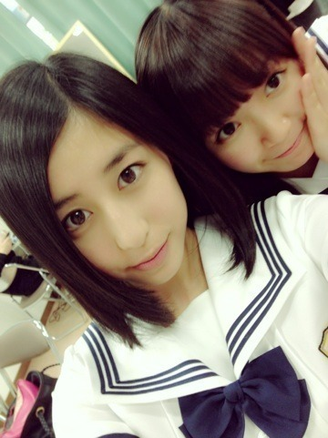

| 2013/06 03 Mon | ステップ(´>∀<｀)ゝ |
ちはるーむへようこそ( ∩ˇωˇ∩)

昨日、やっと、16人のプリンシパル、全公演終了しました！！！
今まで来てくださった皆さん、ほんとにありがとう！
楽しんでくれてたら本望です( ´^` )
残念ながら来れなかった皆さん、
コメントとかで応援ありがとう！
励ましになりました( ´^` )
千秋楽、残念ながらニ幕に出演することはできなかったけど、
でも千秋楽の公演、
いっちばん楽しかったし、
いっちばんやり切ったし、
もう悔いはないです！！うん！！
でもなんでかしらないけど
結果発表終わって楽屋戻ったら
大号泣しちゃって。(´・ω・｀)
悔しい思いもあったし
終わった安心感もあったと思う。
うん。
でもね！！
泣いたあとはすっきりしたよ！
ほら！この通り！
涙で顔ぐちゃぐちゃー(´･∀･`)笑
この公演を通して、
自分の中で何かが変わった気がして。
成長できた気がする。
演技の楽しさを改めて学んだ。
少しだけ堂々と自信を持つことができた。
舞台で素を出すことができた。
でもそれはまだ完全ではなくて、不完全の状態。
今回学んだことをどうやってこれからに繋げていけるか。
活かしていけるか。
そこが大事だと思ってるんだ。
学んだだけで終わってはいけない。
その次のステップに進むためのものだから。
だから私はこのまま進んでいきます。
自分を出すことを恐れずに。
ほら、だって。
「明日も、生きていくんです。」

今日はごめん、これだけ！！
クイズは次に回します！！
よし、テスト終わったし
プリンシパルも終わったし
ゆっくりしよーっと(o^^o)笑
そのまえにまず学校だ！！！
テスト返しに耐えてくる笑(´>∀<｀)ゝ
ばいるんっ
るんるんっ
ちはるんっ
(´>∀<｀)ゝ
コメント(149)
2013/06/03 10:36